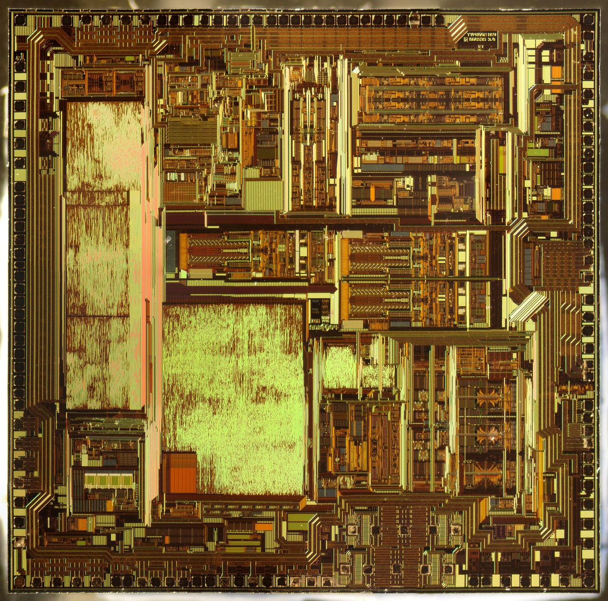

국방용 화합물반도체 R&D 상생팹, 정부·민간 공동 투자 착수

전자신문이 2026년 10월 18일 보도한 바에 따르면, 한국나노기술원과 화합물반도체기술협의회는 오는 30일 서울 서초구 엘타워에서 '화합물반도체 R&D 상생팹 구축 포럼'을 개최한다. 과학기술정책연구원(STEPI), 국방기술진흥연구소, 한국연구재단 등이 참여하며 투자형 R&D 사업의 세부 실행 방안을 논의한다.
투자형 R&D는 기존 출연금 지원 방식과 달리 정부와 민간이 특수목적법인(SPC)을 공동 설립해 지분 투자 형태로 사업을 추진하는 새로운 모델이다. 사업 성과물인 기술 및 시설에 대한 권리를 공동 소유하고, 상업화 수익을 공유하는 구조로 설계된다.
화합물반도체는 갈륨비소(GaAs), 갈륨질화물(GaN), 인화인듐(InP) 등 두 가지 이상의 원소를 조합해 만든 반도체 소재다. 실리콘 반도체 대비 고주파·고출력·고내열 특성이 뛰어나 레이더, 전자전 장비, 군용 통신 시스템 등 국방 전자 분야에 핵심적으로 사용된다.
국방용 화합물반도체가 이번 투자형 R&D의 첫 적용 분야로 선정된 배경에는 공급망 취약성에 대한 안보적 판단이 작용했다. 현재 한국군이 사용하는 국방 전자 시스템의 핵심 화합물반도체 소재·소자는 상당 부분을 해외 수입에 의존하고 있어, 분쟁이나 수출 통제 상황에서 조달 리스크가 크다.
특히 GaN 기반 전력 증폭기와 InP 기반 고주파 소자는 첨단 레이더 및 전자전 체계에 필수적이나, 이들 소재의 에피택시(epitaxy) 웨이퍼 성장 기술과 소자 제조 공정은 미국·일본·유럽 기업들이 주도하고 있다. 국내 자체 공급망 없이는 핵심 군사 장비의 부품 조달 연속성을 보장하기 어려운 실정이다.
상생팹 모델은 중소·중견 소재·부품 기업들이 고가의 화합물반도체 공정 설비를 공동으로 활용할 수 있는 파운드리형 공유 팹(fab)을 구축하는 것을 목표로 한다. 개별 기업이 단독으로 수백억 원 규모의 MOCVD(유기금속 화학기상증착) 장비를 도입하기 어렵다는 현실적 한계를 공동 투자 방식으로 극복하겠다는 구상이다.
화합물반도체 분야의 국내 연구 역량은 한국전자통신연구원(ETRI), 한국나노기술원, 일부 대학 연구실에 분산돼 있으나 상용 생산으로 이어지는 기술 이전 경로가 취약했다. 이번 투자형 R&D는 연구 성과와 산업화 사이의 간극을 메우는 메커니즘으로 SPC 모델을 도입한다는 점에서 주목된다.
SEMICON West 2026을 분석한 EE타임스 보도에 따르면, 미국 반도체 업계도 AI 시대 팹 인프라 확장과 함께 국방·우주용 화합물반도체 공급망 강화를 주요 의제로 다루고 있다. 미국은 CHIPS법에 국방 목적의 화합물반도체 제조 지원 조항을 포함시켜 자국 내 생산 기반 확보에 나서고 있다.
일본도 2025년부터 GaN 웨이퍼 관련 소재 기업에 대한 전략 지원을 강화하고 있으며, 대만의 WIN Semiconductors 등은 국방용 GaAs·GaN 파운드리 생산 능력을 꾸준히 확대하고 있다. 한국의 화합물반도체 자립화 추진은 이러한 글로벌 경쟁 구도 속에서 뒤늦은 출발이지만 방향성은 맞다는 것이 업계의 평가다.
10월 30일 포럼에서는 SPC 설립 방식, 정부 출자 규모, 참여 기업 선정 기준, 팹 입지 등 구체적인 사업 설계안이 공개될 예정이다. 정부는 내년도 예산안에 투자형 R&D 관련 초기 출자금을 반영한 것으로 전해지며, 민간 참여 기업 모집도 포럼 이후 본격화될 전망이다.
국내 소재 관점에서 이번 사업이 실질적으로 진전되면, GaN 에피 웨이퍼용 고순도 암모니아 가스, 기판용 SiC·사파이어 웨이퍼, GaAs 성장용 유기금속 전구체 등 화합물반도체 핵심 소재의 국산화 수요도 함께 창출될 것으로 예상된다. 소부장 생태계 전반에 걸친 파급 효과가 기대된다.